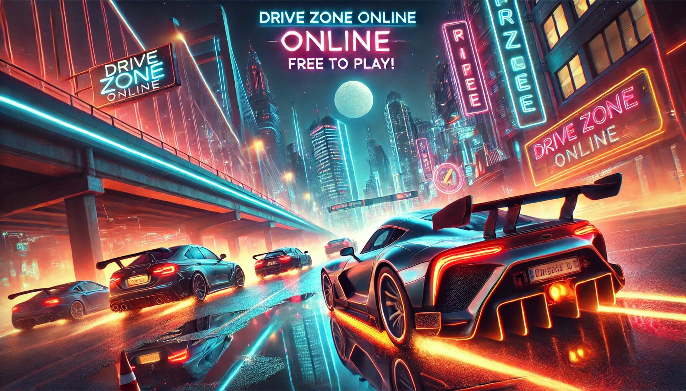

If you're a fan of racing games, you’ve probably heard of Drive Zone, the thrilling driving simulator that’s taking the gaming world by storm. Whether you're a casual gamer or a hardcore racing enthusiast, Drive Zone offers an immersive experience that keeps you coming back for more. But where can you play this fantastic game? And what makes it stand out from the crowd? Don’t worry—we’ve got you covered! In this article, we’ll explore where you can play Drive Zone and dive into some of its extra features that make it a must-play for anyone who loves speed, competition, and fun.
Car Drive Zone MOD APK is a fantastic game for car enthusiasts who love thrilling driving experiences without any limitations! This modded version offers unlimited money, unlocked cars, and premium features, allowing you to enjoy the game to its fullest. With stunning graphics, realistic controls, and a wide variety of vehicles to choose from, it’s like having a virtual garage at your fingertips. Whether you’re cruising through city streets or pulling off crazy stunts, Car Drive Zone MOD APK keeps the excitement alive. Plus, who doesn’t love free upgrades and no ads? Buckle up and get ready for endless fun—just don’t forget to signal before turning!
Drive Zone is widely accessible, making it easy for players to jump into the driver’s seat no matter what device they own. Here’s a breakdown of where you can play this exciting game:
Drive Zone is available on both the Apple App Store and Google Play Store, making it a perfect choice for gamers on the go. Whether you’re waiting for a bus, relaxing at home, or just need a quick racing fix, you can easily download Drive Zone on your smartphone or tablet. The game is optimized for touchscreen controls, so you’ll feel like you’re actually steering the wheel as you navigate through stunning tracks.
If you prefer a bigger screen and more precise controls, you’re in luck! Drive Zone is also available for PC and laptops. You can download it from popular gaming platforms like Steam or directly from the official Drive Zone website. Playing on a PC gives you the advantage of using a keyboard, mouse, or even a gaming controller for a more immersive experience. Plus, the graphics are even more stunning on a high-resolution monitor!
For those who love gaming on consoles, Drive Zone is compatible with PlayStation and Xbox. The game takes full advantage of the powerful hardware in these consoles, delivering smooth gameplay, realistic physics, and jaw-dropping visuals. Whether you’re playing solo or competing with friends online, Drive Zone on consoles is an absolute blast.
If you don’t want to download the game or don’t have access to high-end hardware, you can still play Drive Zone through cloud gaming platforms like NVIDIA GeForce NOW or Xbox Cloud Gaming. These services allow you to stream the game directly to your device, so you can enjoy Drive Zone without worrying about storage space or system requirements.
Now that you know where to play Drive Zone, let’s talk about what makes this game so special. Drive Zone isn’t just another racing game—it’s packed with features that set it apart from the competition. Here are some of the standout extras that make Drive Zone a must-play:
One of the first things you’ll notice when playing Drive Zone is how realistic the driving feels. The game uses advanced physics engines to simulate real-world driving conditions. Whether you’re drifting around a sharp corner, accelerating on a straightaway, or braking to avoid a collision, every movement feels authentic. This level of realism makes Drive Zone not only fun but also a great way to improve your driving skills (just don’t try these moves in real life!).
Drive Zone is a visual treat. The game features high-quality graphics with detailed car models, dynamic weather effects, and beautifully designed tracks. From bustling city streets to serene countryside roads, every environment is crafted with care. The day-night cycle adds an extra layer of immersion, making you feel like you’re racing through a living, breathing world.
What’s a racing game without an impressive lineup of cars? Drive Zone offers a huge selection of vehicles, from sleek sports cars to rugged off-roaders. Each car is customizable, allowing you to tweak its performance and appearance to suit your style. Want a neon-green supercar with turbocharged engines? You got it! Prefer a classic muscle car with a roaring V8? Drive Zone has that too.
Racing against AI opponents is fun, but nothing beats the thrill of competing against real players. Drive Zone’s multiplayer mode lets you race against friends or strangers from around the world. Climb the leaderboards, earn bragging rights, and show off your driving skills in intense online competitions. The multiplayer mode is easy to join, and the matchmaking system ensures you’re paired with players of similar skill levels.
If you prefer a single-player experience, Drive Zone’s career mode has you covered. In this mode, you start as a rookie driver and work your way up to become a racing legend. Complete challenges, earn rewards, and unlock new cars and tracks as you progress. The career mode is designed to keep you engaged with a mix of easy and difficult races, ensuring there’s always something new to strive for.
Not everyone plays games the same way, and Drive Zone understands that. The game offers fully customizable controls, so you can set up your buttons, steering sensitivity, and camera angles however you like. Whether you’re using a touchscreen, keyboard, or controller, Drive Zone gives you the flexibility to play your way.
The developers of Drive Zone are constantly working to improve the game and keep it fresh. Regular updates bring new cars, tracks, and features, ensuring there’s always something new to explore. The community is also actively involved, with developers listening to player feedback and implementing changes to enhance the gaming experience.
Who doesn’t love rewards? Drive Zone is packed with achievements and in-game rewards that give you a sense of accomplishment. Whether it’s completing a difficult race, performing a perfect drift, or winning a multiplayer match, there’s always something to strive for. These rewards can be used to unlock new cars, upgrades, and customization options, adding an extra layer of motivation to keep playing.
Drive Zone isn’t just about racing—it’s also about connecting with other players. The game includes social features like friend lists, chat options, and the ability to form racing clubs. Join a club, participate in club events, and work together to climb the global rankings. It’s a great way to make new friends and share your love of racing.
Whether you’re a seasoned gamer or a complete beginner, Drive Zone is designed to be accessible to everyone. The game includes multiple difficulty levels and a helpful tutorial to get you started. As you improve, you can ramp up the challenge and test your skills against tougher opponents. It’s the perfect balance of fun and challenge, making it a game that everyone can enjoy.
If you haven’t already tried Drive Zone, now is the perfect time to start. With its wide availability, stunning graphics, and exciting features, it’s no wonder this game has become a favorite among racing fans. Whether you’re playing on your phone during a commute or battling it out on a console with friends, Drive Zone offers endless hours of entertainment.
So, what are you waiting for? Download Drive Zone today, buckle up, and get ready for the ride of your life. Whether you’re racing for glory, customizing your dream car, or just enjoying the thrill of speed, Drive Zone has something for everyone. And who knows? You might just discover your inner racing champion.
Drive Zone is more than just a game—it’s an experience. With its realistic driving mechanics, stunning visuals, and a wealth of features, it’s a game that keeps you coming back for more. Whether you’re playing on mobile, PC, or console, Drive Zone delivers a racing experience that’s hard to beat. So, grab your helmet, hit the gas, and let the races begin!
And remember, in the world of Drive Zone, it’s not about the destination—it’s about the thrill of the ride. Happy racing! 🏎️💨